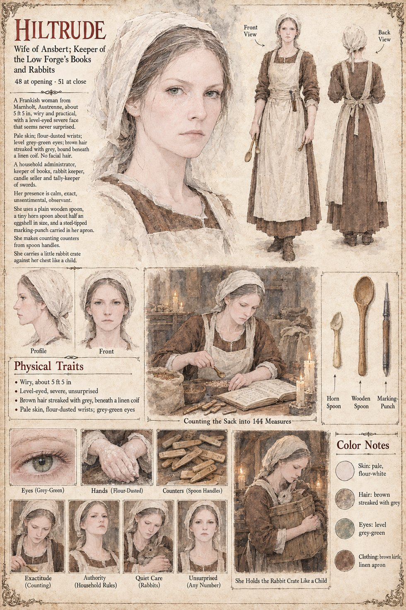

Hiltrude
Wife of Ansbert · keeper of the Low Forge's books and rabbits, later Keeper of the books of the Order · 48 at the opening, 51 at the close
The wife of Ansbert and the household administrator of the Low Forge: keeper of its books, its rabbits and its candles, and, in the words of her sheet, tally-keeper of swords. The pages already written for this case show her wherever the household's rules are made. On the foreigner's first evening in the forge she wraps his long sword and then his short in sacking herself, while he watches (Carter's Wife). After he leaves she sets a bowl of broth on the sill of the stall window for the ox Brun, and it is empty on the sixth morning; when the Countess Adalgund asks the ox's name and later says she does not want him, her answer is that nobody who wanted him would have asked it. At dawn after the burying she is one of the five hands laid on the cold face of the anvil beside Ansbert, Wolfram and Tomobe no Higaide. On the Uncounted Day she returns to Higaide the copper penny the apprentice Lantfrid has kept in his sleeve (Waldrada's Nephew), and at the boy's side her words are Feed the ox.
Her sheet's main scene, Counting the Sack into 144 Measures, draws her at a table by candlelight over an open ledger, spooning out of a sack with a small horn spoon, with counters cut from spoon handles laid in rows beside her; its closing scene, She Holds the Rabbit Crate Like a Child, shows her with a rabbit in a wooden crate against her chest. The number is the one on Ansbert's page, a hundred and forty-four blades, and the hundred and forty-fourth measure is the one Wolfram sweeps into the crucible. The publication notes give her a later office, Keeper of the books of the Order (Epilogue ii), the Order being the Order of the Hundred and Forty-Four that Adalgund founds.
Written from the sheet, from what the other Case 4181 pages already say, and from the character notes in the case's publication-prep file; the manuscript itself was not to hand. Her age (48 at the opening, 51 at the close), her Frankish origin in Marnholt, her wiry build of about 5 ft 5 in, pale flour-dusted skin, level grey-green eyes and brown hair streaked with grey under a linen coif, her plain wooden spoon, the tiny horn spoon half an egg-shell in size and the steel-tipped marking-punch in her apron are the sheet's own, as are its expression panels, Exactitude (Counting), Authority (Household Rules), Quiet Care (Rabbits) and Unsurprised (Any Number).
Appears In

Related Subjects


Related Records

In the evening light of the lean-to Hiltrude counts the sack into a hundred and forty-four heaps of black powder with a horn spoon and the flat of a knife, her lips moving, while Ansbert sits at the settle by the wall with a bowl of barley on his knee.

In the Proof-Hall the empty sack hangs on its iron crook above the black oak block, turning in the draught from a doorway with no door, while a hundred and forty-three knights sit in the spiral of benches with their swords in their hands and the hundred and forty-fourth place stands empty on the flagstones; Hiltrude holds out her empty hands at the threshold, Wolfram begins his first long sweep of the floor, and Higaide stands at the back with his hands in his sleeves.